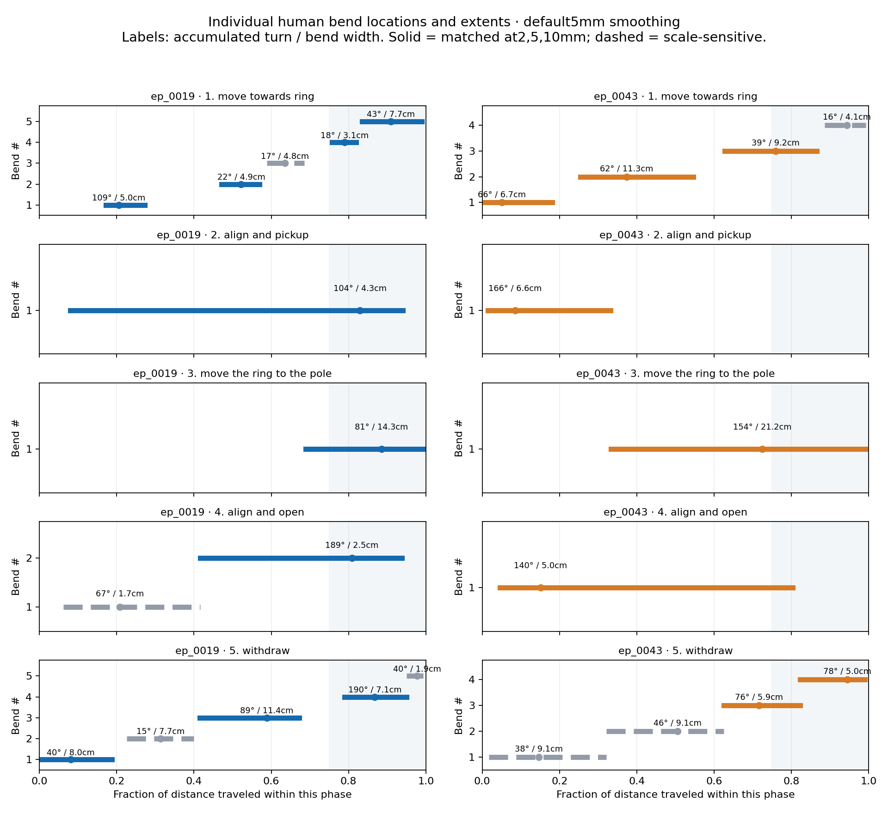

← All motion-comparison galleries
New: whole-trajectory bend detection with phase overlays · Annotate seven more demonstrations
Geometry only. Your two individually annotated left-arm demonstrations versus executed fabrics. No speed metrics, no time-based segmentation, no averaged trajectories. ep_0036 is excluded.
At 5mm spatial smoothing, the human reach phases contain 4–5 detected bends, versus 1–3 in qualified fabrics executions. But human transport has one broad bend in each example, versus 2–5 in fabrics. Pickup alignment has one compact turn in each human example, persistent across all three scales. The answer is phase-specific, not “add more bends everywhere.”
Human pickup-alignment turns occupy about 4.3cm and 6.6cm of path and turn about 104° and 166°, respectively. Transport turns occupy about 14cm and 21cm, with effective radii around 8–10cm versus about 2.3cm during pickup alignment. Their positions are not consistent across the two demonstrations: pickup turns occur at about 83% and 9% of their respective phase paths. This does not establish “always near the endpoint.”
Counts are operational, not ground truth. All results depend on smoothing and detection thresholds; use the marked paths and sensitivity tables. More bends do not automatically mean better motion.
Gray = raw path. Colored regions B1, B2, … = distinct detected bends; the rest of the smoothed path is dark. Numbering restarts for each example. The circle is the start; × is the end. Hover for bend location, turning angle, width and radius.
Each curve is curvature versus distance along its own phase. Shaded regions correspond to the numbered bends above. Curvature has units 1/metre; tighter turns have higher curvature. The dashed line is the 3/metre activity threshold. The last quarter of a phase is an endpoint-relative location, not measured distance to the object.
Horizontal bar = extent along the phase path. Circle = turning-weighted location. Dark solid bars persist at 2, 5 and 10 mm; dashed gray bars are sensitive to scale. No human paths are averaged.

Resample by arc length at approximately 1 mm; smooth spatially at 2, 5 or 10 mm; calculate unit-tangent curvature. Merge short gaps, separate only deep valleys, and retain turning regions with at least 15° accumulated turn over at least 5 mm. Thus a bend is a region, not every curvature peak.
Persistence: a default 5 mm region must have a one-to-one overlapping match at both 2 mm and 10 mm. A coarse merged region cannot support several fine regions. Boundary-near regions are flagged because smoothing and phase cuts can alter their measured angle.
Effective radius = bend width / accumulated turning angle in radians. This describes concentration of turning. It is not necessarily a fitted circle radius. Accumulated turning can exceed the angle between the start and end headings; reversals and loop-like regions are separately flagged for inspection.
Tested on a straight line, a known-radius circular arc, two separated bends, submillimetre jitter, a full loop, rigid coordinate changes, and nonuniform sampling. These checks validate the implementation, not the semantic definition of a human correction.
All curves, bend regions and sensitivity results · Bend metrics CSV · Known-geometry checks · Earlier phase view